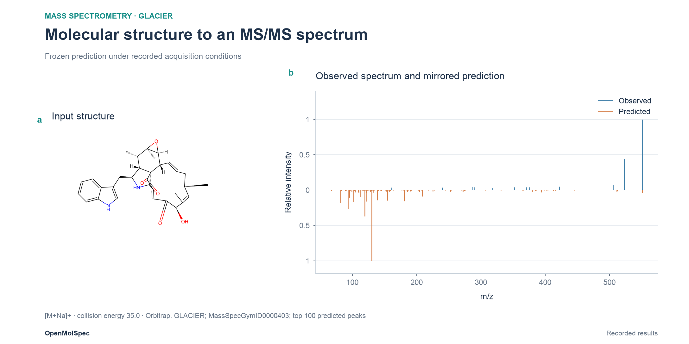

Experimental · External dataset
TransPeakNet HSQC
Expert-annotated C–H cross-peaks with original molecular structures and atom indices.
- Test spectra
- 479
- Distinct molecules
- 478
- Assigned carbon rows
- 7,310
NMR / MS/MS / IR / RAMAN
Predict molecular spectra, assign experimental peaks and explore the data behind each model.
Choose a workflow to run a model with your own data or a worked example.
Molecular input
Enter a molecular SMILES and choose the spectroscopy task.
CCOModel output, spectra and numerical values will appear here when the workflow is ready.
Learn the input fields and model settings in the task guides .
| Task guide | Input | Output |
|---|---|---|
| 1H chemical shift predictionnmr.forward.1H | Molecular structure; nucleus | Atom-indexed shifts (ppm) |
| 13C chemical shift predictionnmr.forward.13C | Molecular structure; nucleus | Atom-indexed shifts (ppm) |
| 19F chemical shift predictionnmr.forward.19F | Molecular structure; nucleus | Atom-indexed shifts (ppm) |
| 31P chemical shift predictionnmr.forward.31P | Molecular structure; nucleus | Atom-indexed shifts (ppm) |
| 11B chemical shift predictionnmr.forward.11B | Molecular structure; nucleus | Atom-indexed shifts (ppm) |
| 29Si chemical shift predictionnmr.forward.29Si | Molecular structure; nucleus | Atom-indexed shifts (ppm) |
| Spectrum-to-structure retrieval: ¹Hnmr.retrieval.h.s2m | NMR peaks; candidate structures | Ranked molecular structures |
| Structure-to-spectrum retrieval: ¹Hnmr.retrieval.h.m2s | Molecular structure; candidate spectra | Ranked spectra |
| Structure elucidation from ¹H NMRnmr.generation.h | NMR peaks; supplied molecular formula | SMILES candidates |
| Spectrum-to-structure retrieval: ¹³Cnmr.retrieval.c.s2m | NMR peaks; candidate structures | Ranked molecular structures |
| Structure-to-spectrum retrieval: ¹³Cnmr.retrieval.c.m2s | Molecular structure; candidate spectra | Ranked spectra |
| Structure elucidation from ¹³C NMRnmr.generation.c | NMR peaks; supplied molecular formula | SMILES candidates |
| Spectrum-to-structure retrieval: ¹H + ¹³Cnmr.retrieval.hc.s2m | NMR peaks; candidate structures | Ranked molecular structures |
| Structure-to-spectrum retrieval: ¹H + ¹³Cnmr.retrieval.hc.m2s | Molecular structure; candidate spectra | Ranked spectra |
| Structure elucidation from ¹H + ¹³C NMRnmr.generation.hc | NMR peaks; supplied molecular formula | SMILES candidates |
| HOMO–LUMO gap from IRvibrational.gap.ir | IR | HOMO–LUMO gap (eV) |
| HOMO–LUMO gap from Ramanvibrational.gap.raman | RAMAN | HOMO–LUMO gap (eV) |
| HOMO–LUMO gap from IR + Ramanvibrational.gap.ir_raman | IR, RAMAN | HOMO–LUMO gap (eV) |
| HOMO–LUMO gap from IR + Raman + NMRvibrational.gap.ir_raman_hc | IR, Raman, 1H, 13C | HOMO–LUMO gap (eV) |
| IR and Raman from a molecular geometryvibrational.forward | Elements and 3D Cartesian coordinates | IR and Raman spectra |
| Structure retrieval: IR + Ramanvibrational.retrieval | IR, Raman; candidate structures | Ranked molecular structures |
| Structure generation: IR + Ramanvibrational.generation | IR, Raman | SMILES candidates |
| Peak-to-atom assignmentnmr.assignment | Known structure; observed H/C peaks | Candidate peak-to-atom assignments |
| Cross-solvent chemical shift transfernmr.solvent_transfer | Structure; source shifts; solvent pair | Target shifts and reference provenance |
| Candidate reranking: IR + Ramanspectroscopy.reranking | IR, Raman; candidate structures | Ranked molecular structures |
| Structure retrieval: IR + Raman + NMRvibrational.retrieval.hc | IR, Raman, 1H, 13C; candidate structures | Ranked molecular structures |
| Structure generation: IR + Raman + NMRvibrational.generation.hc | IR, Raman, 1H, 13C | SMILES candidates |
| Candidate reranking: IR + Raman + NMRspectroscopy.reranking.hc | IR, Raman, 1H, 13C; candidate structures | Ranked molecular structures |
| HSQC cross-peak predictionnmr.hsqc.transpeaknet | Known structure and solvent | Carbon-indexed HSQC cross-peaks (ppm) |
| MS/MS prediction with GLACIERms.forward.glacier | Structure; adduct; collision energy; instrument | MS/MS m/z–intensity peaks |
| MS/MS prediction with ICEBERGms.forward.iceberg | Structure; adduct; collision energy; instrument | MS/MS m/z–intensity peaks |
| MS/MS fragment annotationms.annotation.magma | Structure; MS/MS peaks; precursor conditions | Candidate fragment annotations |
Drag the orange oxygen to the outlined bond position.
Inspect measured peaks, molecular structures and acquisition conditions from eight dataset views.
Loading preview…
Loading molecular records…
Experimental · External dataset
Expert-annotated C–H cross-peaks with original molecular structures and atom indices.
| Dataset / view | Category | Description | Spectra | Molecules |
|---|---|---|---|---|
| OpenDataLab · cleaned H/C NMR | Experimental · OpenMolSpec collection | Proton and carbon chemical shifts, molecular structures, formulas and experimental conditions; predefined train/validation/test files. | 2,972,843 | 2,678,511 |
| OpenDataLab · 29Si | Experimental · OpenMolSpec collection | Silicon chemical shifts in ppm with silicon-containing molecular structures. | 726 | 636 |
| OpenDataLab · Raman | Experimental · OpenMolSpec collection | Measured Raman peak positions in cm⁻¹ and source experimental metadata. | 42 | 39 |
| OpenDataLab · 11B | Experimental · OpenMolSpec collection | Boron chemical shifts in ppm with boron-containing molecular structures. | 1,140 | 1,017 |
| OpenDataLab · MS | Experimental · OpenMolSpec collection | Measured m/z–intensity peak lists paired with standardized molecular structures. | 5,233 | 4,980 |
| OpenDataLab · 31P | Experimental · OpenMolSpec collection | Phosphorus chemical shifts in ppm with phosphorus-containing molecular structures. | 21,662 | 18,238 |
| OpenDataLab · 19F | Experimental · OpenMolSpec collection | Fluorine chemical shifts in ppm with fluorine-containing molecular structures. | 56,679 | 50,402 |
| OpenDataLab · IR | Experimental · OpenMolSpec collection | Measured infrared peak positions in cm⁻¹, paired with standardized molecular structures. | 177,759 | 168,197 |
| NMRexp v2 · H/C view | Experimental · external | Literature-derived proton and carbon spectra paired with valid molecular structures. | 3,091,126 | 1,492,268 |
| TransPeakNet · HSQC test set | Experimental · external | Expert-annotated 2D C–H cross-peaks. The authors provide training and validation spectra upon request. | 479 | 478 |
| OpenMolSpec · computed test view | Computed · OpenMolSpec benchmark | IR/Raman spectra for 20,390 calculation records, with H/C shifts, structures and electronic properties. | 40,780 | 16,728 |
| MassSpecGym v1.5 · prediction view | Experimental · external | Tandem mass spectra paired with molecular structures and acquisition conditions for forward prediction. | 119,029 | 16,974 |
| MassBank · MS2 view | Experimental · external | Numerical tandem mass spectra with parseable molecular structures and repository acquisition metadata. | 120,512 | 11,699 |
| QMe14S · paired IR/Raman view | Computed · external | 184,252 finite, nonconstant infrared/Raman pairs across 14 elements; each channel counts as one spectrum. | 368,504 | 180,073 |
Counts describe each selected dataset view. See the data guide for source information, fields and train/test splits.
Replay a recorded ethanol analysis, from the first tool call to the predicted carbon shifts.
Loading the recorded tool sequence…


Connect the same tools to your own agent with the Agent Harness guide .




Follow an executed tutorial, explore a dataset schema, or bring OpenMolSpec into your Python and agent workflows.
Installation, your first spectrum and model calls.
Fields, sources, distributions and dataset splits.
Dataset readers, model interfaces and training.
Python, CLI and MCP tools for scientific agents.